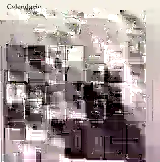
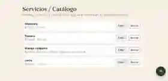
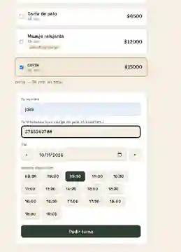
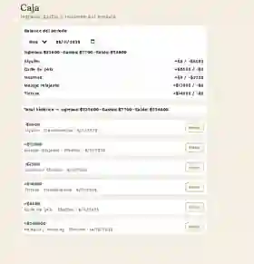
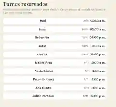

Calendario de turnosTECNOLOGÍA HECHA PARA EL DÍA A DÍA
Tu negocio tiene mucho por hacer. TusAPP te da una mano.
Aplicaciones simples y prácticas para que puedas enfocarte en lo que mejor hacés: hacer crecer tu negocio.
Explorar aplicaciones Una familia de herramientas, creciendo con vos.

Servicios y catálogo
Reservas de clientes
Caja y cobros
Turnos reservadosHECHAS PARA RESOLVER
Una app para cada desafío.
Conocé las herramientas que ya están listas para acompañar el día a día de tu negocio.
01 / SIMPLEMenos vueltas.
Todo claro para empezar a usarlo enseguida.
02 / ÚTILMás tiempo para vos.
Soluciones enfocadas en lo que tu negocio necesita.
03 / EN MARCHASeguimos creciendo.
Nuevas herramientas se suman a la familia TusAPP.
TUSAPP
Una misma casa. Distintas soluciones.
La identidad de TusAPP funciona como marca madre. Cada aplicación mantiene una estética común y, al mismo tiempo, tiene su propio color e iconografía.
Conocer las novedades →